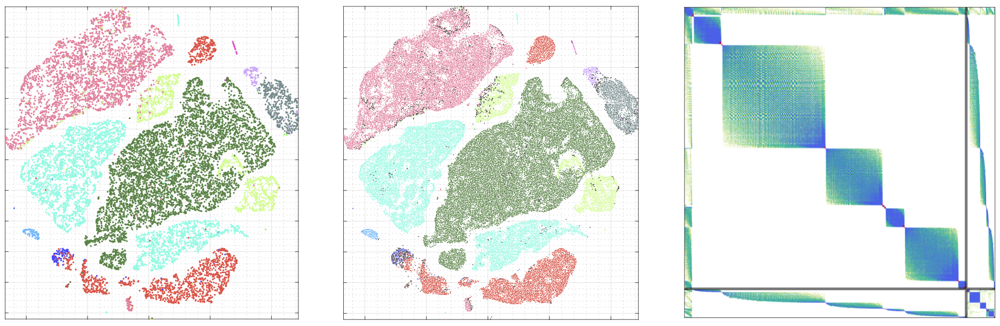
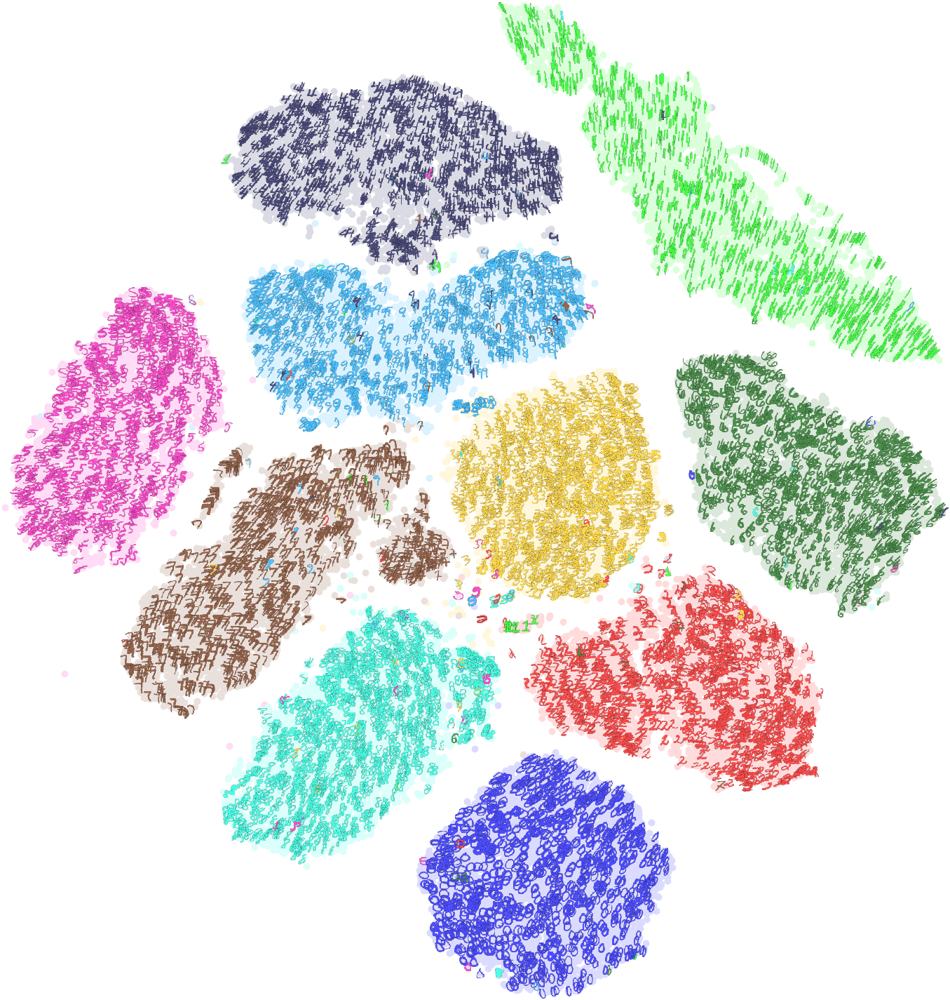

Demo cases
A Barabasi (random) graph

Independent 2D vertex embedding and edge embedding in case (a) vs. the 2D twin-embeddings in case (b) of a Barabási-Albert graph (n = 500 nodes, m = 2,485 edges). For each case, in the vertex embedding (to the left), the same $9$ vertex points with the highest degrees and the line segments representing their respective incident edges are highlighted in red. The highlighted line segments are translated to the corresponding edge points in the corresponding edge embedding space.
Stick sculpture
 The sculpture is comprised of $105$ sticks (edges) and $50$ joins (vertices). From left to right: (a) A non-planar graph for the sculpture with n = 50 nodes and m = 105 edges; (b) The (m + n) × (m + n) twin-embedding adjacency matrix; see Equation (\ref{xx}); (c) A 2D twin embedding of the graph. (c-1) The vertex points marked in blue and the edge points in red are interspersed. A blue vertex point has its adjacent vertex points in blue close by and its incident edges in red nearby. (c-2) The blue vertex points and the red edge points are well matched, manifesting the effect of self-assignment by the twin embedding. (c-3) The red point clusters indicate densely bundled edges at high-degree vertices. (d) The vertex embedding is split from the twin embedding. Without external regulation, the line segments for the edges are well laid out and less prone to co-linear or overly crossing placements, as evidenced by the autonomous self-regulation induced by the twin-embedding method.
The sculpture is comprised of $105$ sticks (edges) and $50$ joins (vertices). From left to right: (a) A non-planar graph for the sculpture with n = 50 nodes and m = 105 edges; (b) The (m + n) × (m + n) twin-embedding adjacency matrix; see Equation (\ref{xx}); (c) A 2D twin embedding of the graph. (c-1) The vertex points marked in blue and the edge points in red are interspersed. A blue vertex point has its adjacent vertex points in blue close by and its incident edges in red nearby. (c-2) The blue vertex points and the red edge points are well matched, manifesting the effect of self-assignment by the twin embedding. (c-3) The red point clusters indicate densely bundled edges at high-degree vertices. (d) The vertex embedding is split from the twin embedding. Without external regulation, the line segments for the edges are well laid out and less prone to co-linear or overly crossing placements, as evidenced by the autonomous self-regulation induced by the twin-embedding method.
The subnetwork of vasculature cells from the Tabular Sapiens network

Data source: Tabula Sapiens biological network data
The subnetwork has $n = 16,037$ nodes for the cells and m = 158,885 edges by similarity in gene expressions. There are $14$ cell types or classes.
(Left) The subnetwork $G$ in a 2D vertex vector/point embedding space;
(Middle) A 2D edge vector/point embedding space obtained by the twin-embedding method introduced in this paper;
(Right) The right plot displays the twin-embedding matrix of (\ref{??}).
In the vertex embedding, the cell/vertex points are color-coded by the cell types. In edge embedding, any point for an intra-class edge is colored by the same cell class color; any point for an inter-class edge is colored black. As the edge points are nearly $10$ times denser, the edge-point marker size is made a quarter of the vertex-point marker size. The vertex point cloud and the edge point cloud are superbly aligned in their global configurations as well as in their class substructures.
A kNN graph of MNIST-digit image collection
 A kNN graph (k=16) for the image data MNIST-DIGITS in a 2D vertex embedding space. The dataset contains 70,000 images of handwritten digits. Every point in the embedding space represents a digit image, colored by its digit class cluster. Each cluster is textured by sampled digit images visible upon zoom-in. The clusters are spatially well separated. This advanced function is provided by tuXartis.
the email network at the University of xxx at the year of xxx
(more to come)